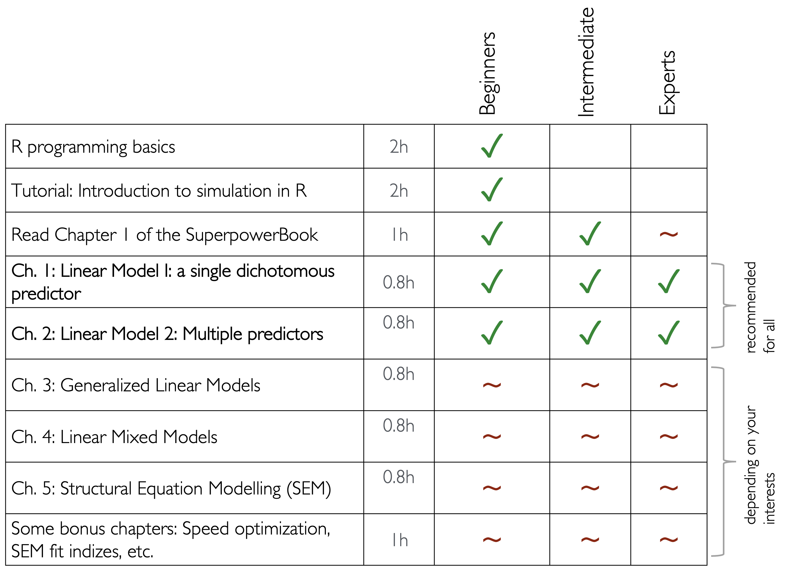

install.packages(
c(
"ggplot2",
"ggdist",
# "gghalves",
"pwr",
"MBESS",
"Rfast",
"DescTools",
"lme4",
"lmerTest",
"tidyr",
"Rfast",
"future.apply",
"lavaan",
"MASS"
),
dependencies = TRUE,
repos = "https://cran.rstudio.com/"
)
install.packages("devtools")
devtools::install_github("debruine/faux")Simulations for Advanced Power Analyses
About this work
This tutorial was created by Felix Schönbrodt and Moritz Fischer, with contributions from Malika Ihle, to be part of the training offering of the Ludwig-Maximilian University Open Science Center in Munich.
Note
This book is still being developed. If you have comment to contribute to its improvement, you can submit pull requests in the respective .qmd file of the source repository by clicking on the ‘Edit this page’ and ‘Report an issue’ in the right navigation panel of each page.
Structure of the tutorial
Depending on your prior knowledge, you can fast forward some steps:

Acquire necessary basic coding skills in R
You need to know R programming basics. If you are unfamiliar with R, you are advised to follow a self-paced basic tutorial prior to the workshop, e.g.: https://www.tutorialspoint.com/r up to “data reshaping” (this tutorial, for example, takes around 2h and covers all necessary basics).
For a higher-level introduction to R coding skills you can do the self-paced tutorial Introduction to simulation in R. This tutorial teaches how to simulate data and writing functions in R, with the goal to e.g.:
- check alpha so your statistical models don’t yield more than 5% false-positive results
- check beta (power) for easy tests such as t-tests
- prepare a preregistration and make sure your code works
- check your understanding of statistics
Comprehensive introduction to power analyses
This introduction covers sample effect sizes vs. population effect sizes, how to take into account the uncertainty of the sample effect size to create a safeguard effect size to be used in power analyses, why post hoc power analyses are pointless, and why it is better to calculate the minimal detectable effect instead.
The rest of the Superpower book teaches how to use the superpower R package to simulate factorial designs and calculate power, which may be of great interest to you! In our tutorial, we chose to teach how to write simulation ‘by hand’ so you can understand the concept and adapt it to any of your designs.
Tutorial structure
With these prerequisites, you can start to learn power calculations for different complex models. Here are the type of models we will cover, you can pick and choose what is relevant to you:
- Ch. 1: Linear Model 1: A single dichotomous predictor
- Ch. 2: Linear Model 2: Multiple predictors
- Ch. 3: Generalized Linear Models
- Ch. 4: Linear Mixed Models
- Ch. 5: Structural Equation Modelling (SEM)
We recommend that everybody works through chapters 1 and 2, and then dive into the other chapters that are relevant.
For each model, we will follow the structure:
- Define what type of data and variables need to be simulated, i.e., their distribution, their class (e.g., factor vs. numerical value).
- Generate data based on the equation of the model (data = model + error).
- Run the statistical test, and record the relevant statistic (e.g., p-value).
- Replicate steps 2 and 3 to get the distribution of the statistic of interest (e.g., p-value).
- Analyze and interpret the combined results of many simulations, i.e., check for which sample size you get at a significant result in 80% of the simulations.
Install all packages
The following packages are necessary to reproduce the output of this tutorial. We recommend installing all of them before you dive into the individual chapters.
License & Funding note
This tutorial was initially commissioned and funded by the University of Hamburg, Faculty of Psychology and Movement Science.
It is licensed under a Creative Commons Attribution-ShareAlike 4.0 International License.